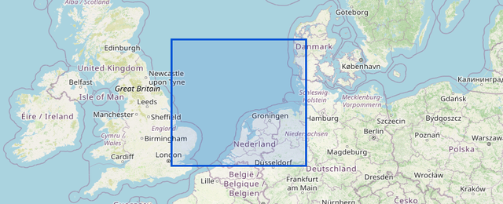
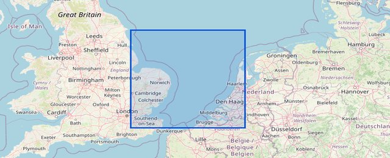
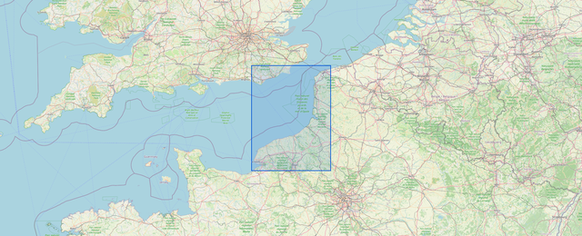
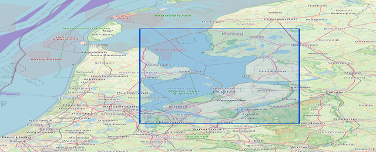
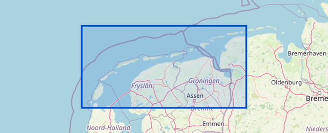

North Sea

North Sea South

Channel

Zealand

Lake IJssel

Wadden Sea
| KNMI model reference time: | 2026-04-03 13:00 UTC |
| KNMI model publication time: | 2026-04-03 15:33 UTC |
| Weatherfiles publication time: | 2026-04-03 22:10 UTC |